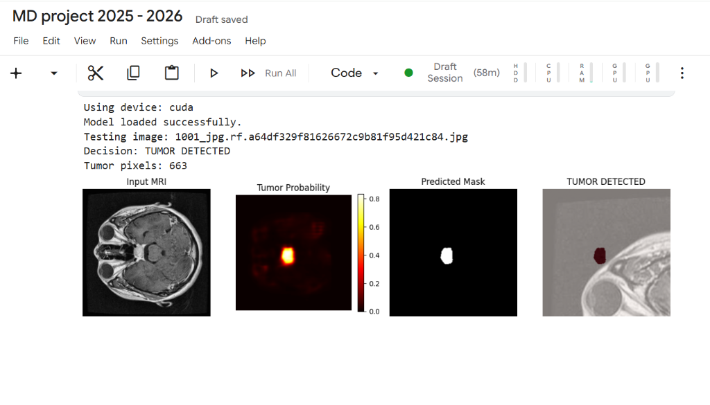
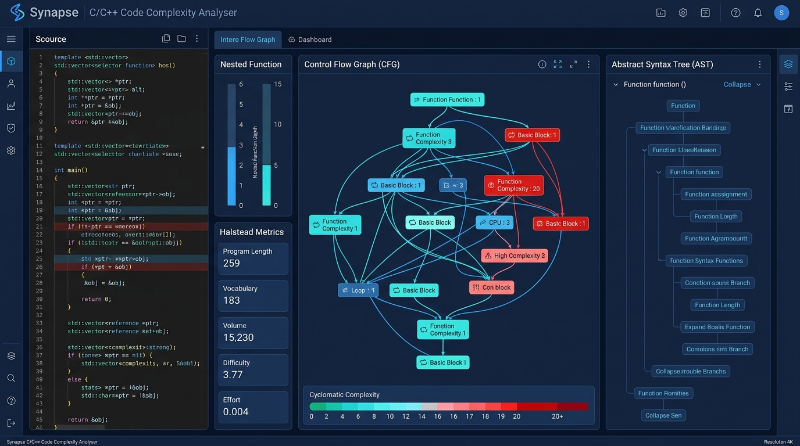

Nithin Balaji
Undergraduate computer science student specializing in core software development, algorithms, and interactive web architecture. Focused on writing robust code with meticulous visual precision.
Academic Record & Coursework
Authoritative transcript from Vellore Institute of Technology (VIT), Vellore — B.Tech Computer Science and Engineering (CSE Core).
Technical Competencies
Languages, libraries, and foundational computer science principles practiced across coursework and active projects.
Skills Learnt
Proficient & Applied- Python Algorithms, Problem Solving
- C / C++ Data Structures, Systems Programming
Skills Learning
In Progress & Active Exploration- Java Object-Oriented Programming, Core Concepts
- HTML / CSS Web Semantics, Responsive Styling
- Figma UI/UX Design, Wireframing
Computer Science Foundations & Tools
Engineering Projects
Featured software systems, deep learning models, and static analysis tools built with core engineering principles.

CNN Brain Tumor Detection & Segmentation
Deep convolutional neural network system for automated radiological MRI scan screening and tumor lesion segmentation. Combines high-sensitivity classification with pixel-level mask prediction and probability gradient heatmaps for fast clinical decision support.

C/C++ Code Complexity Analyser
Automated static analysis engine and code visualization workbench for C & C++ codebases. Constructs Abstract Syntax Trees (AST) and Control Flow Graphs (CFG) to measure McCabe cyclomatic complexity, Halstead software metrics, and nested function depth bottlenecks.
Connect & Collaborate
Whether you are interested in exploring collaborative software projects, discussing academic research in algorithms, or discussing developer opportunities, I look forward to connecting.